1711
Родился Михаил Васильевич Ломоносов - первый русский учёный-естествоиспытатель, поэт, филолог, академик Петербургской AH (1745), почётный член Петербургской Академии художеств (1763).
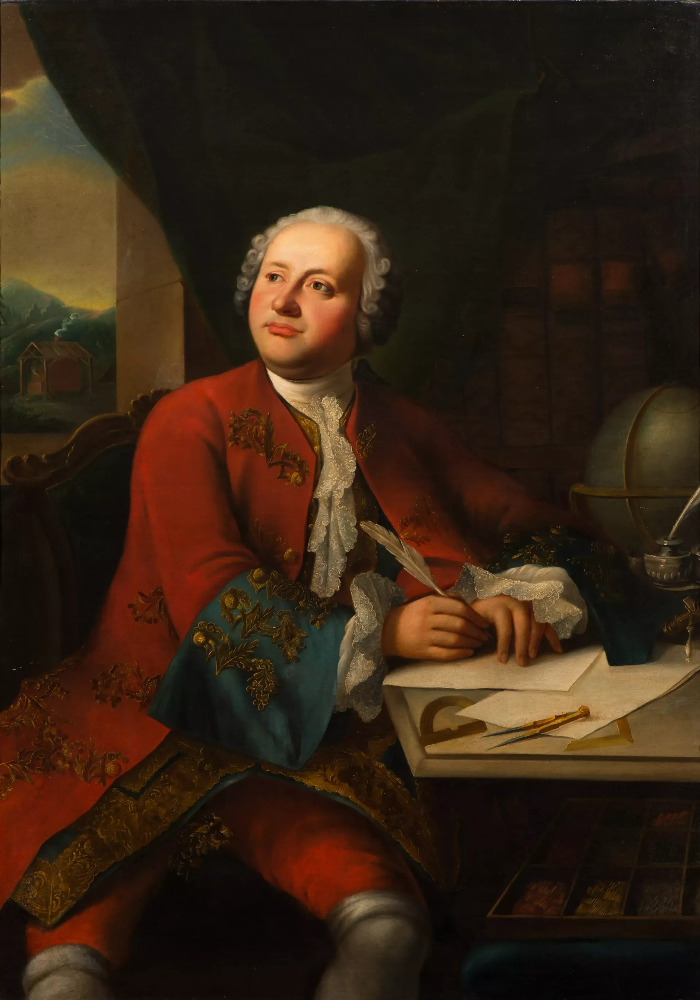1722
Родился Леопольд Ауэнбруггер — австрийский врач, первым в истории медицины (в 1754 году) применивший метод перкуссии в качестве средства диагностики заболеваний.
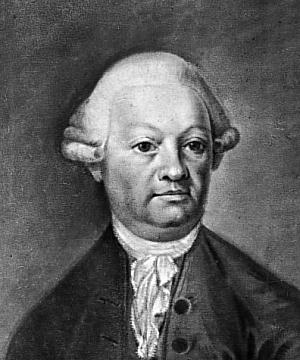1770
Родился Крузенштерн Иван Фёдорович (Адам Иоганн) - российский мореплаватель, адмирал (1841), поч. чл. Петербургской АН (1806), чл.-корр. Парижской АН (1810), ин. чл. Лондонского королевского об-ва (1837).
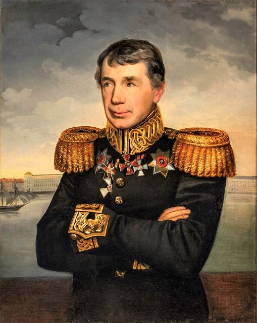1875
Родился Калинин Михаил Иванович - российский революционный деятель, советский государственный и партийный деятель, Герой Соц. Труда (1944).
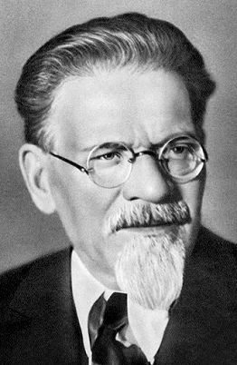1876
Родилась Афанасьева Татьяна Алексеевна — русская и нидерландская учёная, математик, физик.
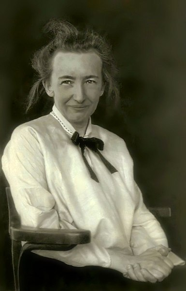1888
Родился Капабланка Хосе Рауль - кубинский спортсмен, 3-й в истории шахмат чемпион мира (1921–1927), шахматный литератор, дипломат.
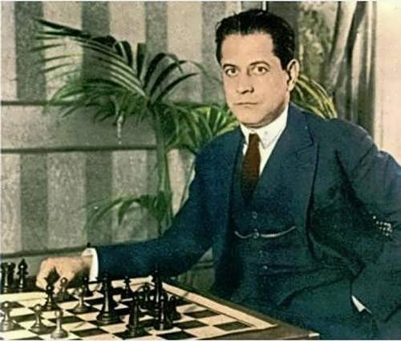1896
Родился Жуков Георгий Константинович - советский полководец, Маршал Советского Союза (1943), четырежды Герой Советского Союза (1939, 1944, 1945, 1956).
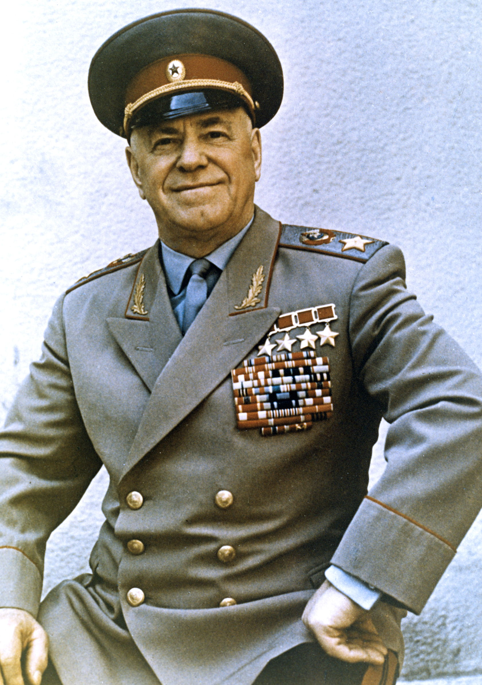1900
Родился Новиков Александр Александрович - советский военачальник, дважды Герой Советского Союза (1945 – дважды), главный маршал авиации (1944). Из крестьян. Окончил Нижегородские пехотные курсы комсостава (1920), курсы «Выстрел» (1922) и Военную академию имени М. В. Фрунзе (1930). На военной службе с 1919 г.
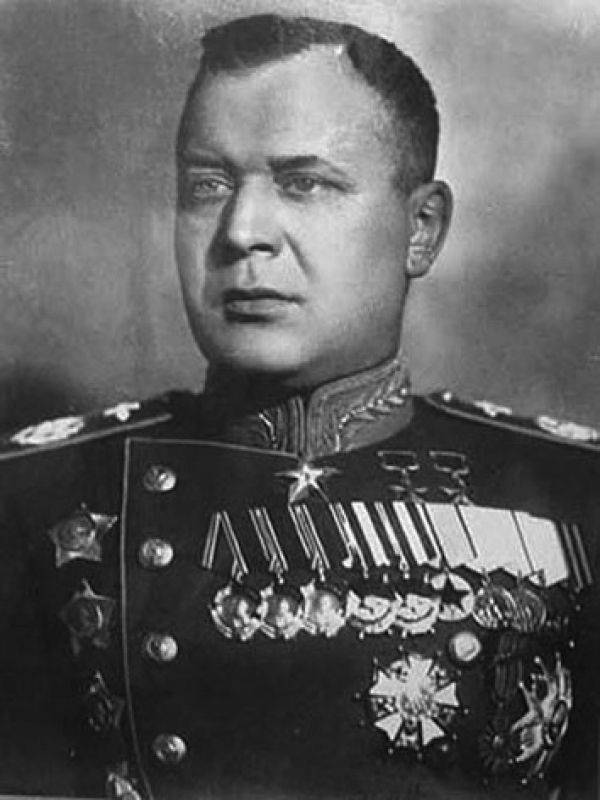Родился Жигарев Павел Фёдорович - советский военачальник, главный маршал авиации (1955).
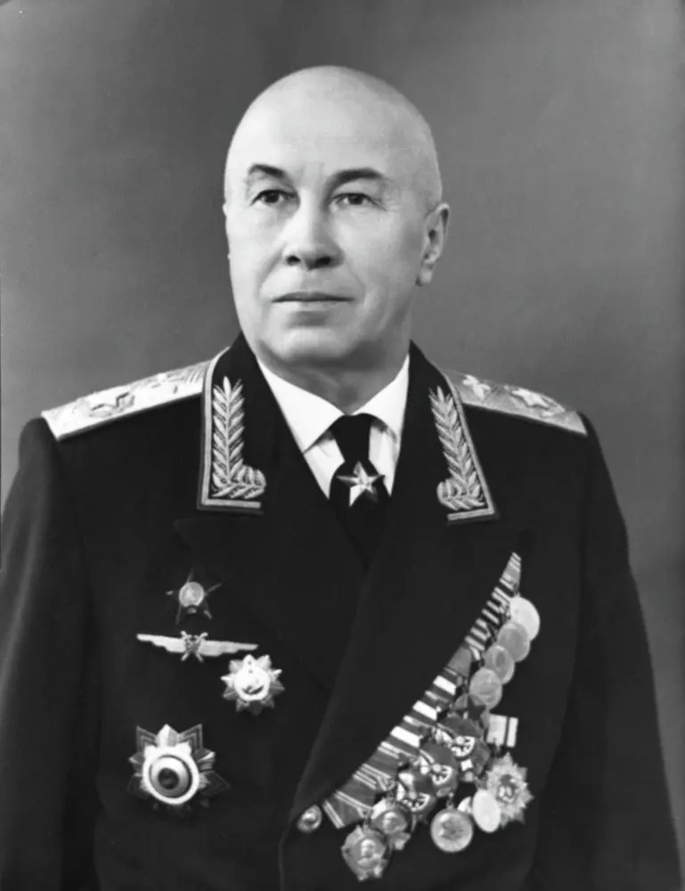Родился Лаврентьев Михаил Алексеевич - российский математик и механик, академик АН СССР (1946, вице-президент в 1957–1975), председатель Президиума СО АН СССР (1957–1975), Герой Социалистического Труда (1967). Иностранный член Парижской АН (1971), Германской академии естествоиспытателей «Леопольдина» (1971), вице-президент Международного математического союза (1966–1970).
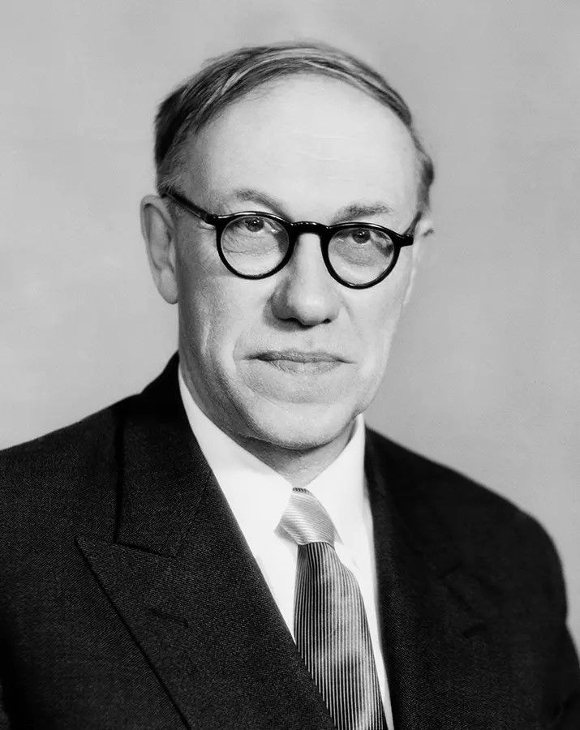1901
Родился Анашкин Михаил Борисович - советский военный деятель, генерал-лейтенант (11 июля 1945 года). Герой Советского Союза (6 апреля 1945 года).

Родилась Нина Карловна Бари — советский математик, известна своими трудами в области тригонометрических рядов. Доктор физико-математических наук (1935), профессор МГУ.
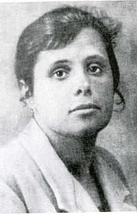1917
Родилась Индира Ганди - государственный и политический деятель Индии, центральная фигура в партии «Индийский национальный конгресс», единственная женщина — премьер-министр Индии. Дочь первого премьер-министра страны Джавахарлала Неру, по длительности правления она уступает лишь отцу. Мать Раджива Ганди.
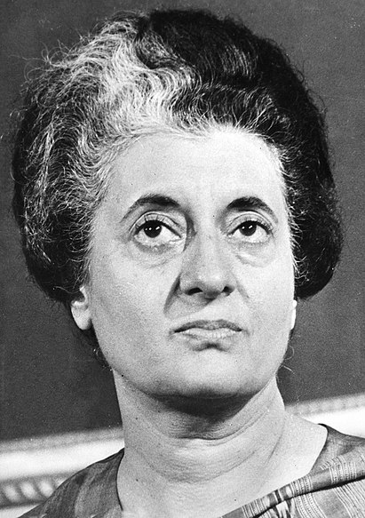1922
Родился Кнорозов Юрий Валентинович — советский и российский историк, этнограф, лингвист и эпиграфист, переводчик, основатель советской школы майянистики.
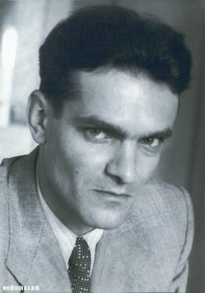